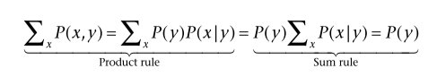
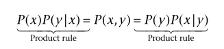

> 2 O Caminho de baixo para a Inferência Ativa
My thinking is first and last and always for the sake of my doing. —William James
2.1 Introdução
Este capítulo introduz a Inferência Ativa partindo da visão helmholtziana — ou talvez kantiana — da “percepção como inferência inconsciente” (Helmholtz 1867) e ideias relacionadas que surgiram mais recentemente sob a hipótese do cérebro bayesiano. Ele explica como a Inferência Ativa engloba e estende essas ideias tratando não apenas a percepção, mas também a ação, o planejamento e o aprendizado como problemas de inferência (Bayesiana) e derivando uma aproximação baseada em princípios (variacional) para esses problemas de outra forma intratáveis.
2.2 Percepção como Inferência
Há uma longa tradição de ver o cérebro como uma “máquina preditiva”, ou um órgão estatístico que infere e prevê estados externos do mundo. Essa ideia remonta à noção de “percepção como inferência inconsciente” (Helmholtz 1866). Mais recentemente, isso foi reformulado como a hipótese do “cérebro bayesiano” (Doya 2007). A partir dessa perspectiva, a percepção não é uma transdução puramente de baixo para cima de estados sensoriais (por exemplo, da retina) em representações internas do que está lá fora (por exemplo, como padrões de atividade neuronal). Em vez disso, é um processo inferencial que combina informações anteriores (de cima para baixo) sobre as causas mais prováveis das sensações com estímulos sensoriais (de baixo para cima). Os processos inferenciais operam em representações probabilísticas de estados do mundo e seguem a regra de Bayes, que prescreve a atualização (ótima) à luz da evidência sensorial. A percepção não é um processo passivo de fora para dentro – no qual a informação é extraída de impressões em nosso epitélio sensorial de “lá fora”. É um processo construtivo de dentro para fora – no qual as sensações são usadas para confirmar ou refutar hipóteses sobre como elas foram geradas (MacKay 1956, Gregory 1980, Yuille e Kersten 2006, Neisser 2014, A. Clark 2015).
Por sua vez, realizar a inferência Bayesiana requer um modelo generativo – às vezes chamado de modelo direto. Um modelo generativo é uma construção da teoria estatística que gera previsões sobre as observações. Pode ser formulado como a probabilidade conjunta \(P({\color{Red}x,\color{Orange}y)}\) das observações \(\color{Orange}y\) e os estados ocultos do mundo \(\color{Red}x\) que geram essas observações. Estes últimos são referidos como estados ocultos ou latentes, pois não podem ser observados diretamente. Esta probabilidade conjunta pode ser decomposta em duas partes. O primeiro é um \(P({\color{Red}x)}\) prévio, que denota o conhecimento do organismo sobre os estados ocultos do mundo antes de ver os dados sensoriais.
A segunda é a probabilidade \(P( y | x)\), que denota o conhecimento do organismo de como as observações são geradas a partir de estados. A regra de Bayes nos diz como combinar esses dois elementos, essencialmente atualizando uma probabilidade anterior \(P(x)\) em uma probabilidade posterior de estados ocultos após receber observações \(P(x | y)\). Para os leitores que precisam de uma breve atualização sobre a teoria básica da probabilidade, o quadro 2.1 fornece um resumo.
A inferência bayesiana é um tópico amplo que surge em disciplinas como estatística, aprendizado de máquina e neurociência computacional. Um tratamento completo dos tópicos associados está além do escopo deste livro, mas há excelentes recursos disponíveis para aqueles que desejam entendê-lo em profundidade (Murphy 2012). No entanto, tudo isso é baseado em uma regra simples. Para ilustrar essa regra, consideramos um exemplo de inferência perceptiva Bayesiana (figura 2.1). Imagine uma pessoa que acredita fortemente que está diante de uma maçã. Essa crença corresponde a uma probabilidade anterior, ou abreviada. Essa priori compreende a probabilidade atribuída à hipótese da maçã e a probabilidade atribuída às hipóteses alternativas. Neste exemplo, nossa hipótese alternativa é que não é uma maçã, mas um sapo. Numericamente, a distribuição de probabilidade anterior atribui 0,9 à maçã e 0,1 à rã. Observe que, como assumimos que existem apenas duas hipóteses plausíveis (mutuamente exclusivas), elas devem somar um. A pessoa também está equipada com um modelo de probabilidade, que atribui uma alta probabilidade ao fato de que os sapos pulam, enquanto as maçãs não. Essa probabilidade especifica o mapeamento (probabilístico) dos dois estados ocultos (sapo ou maçã) para as duas observações (pula ou não pula). Juntos, o anterior e a probabilidade formam o modelo generativo da pessoa.
| Quadro 2.1 As regras de soma e produto de probabilidade |
|---|
| O raciocínio probabilístico é sustentado por duas regras principais: as regras de soma e produto de probabilidade, que são as seguintes (respectivamente): \[\sum_{\color{Red}x} P(\color{Red}x)=1\] \[P(\color{Red}x)P(\color{Orange}y|\color{Red}x)=P(\color{Red}x,\color{Orange}y)\] A regra da soma diz que a probabilidade de todos os eventos possíveis \((x)\) deve somar (ou integrar) a um. A regra do produto diz que a probabilidade conjunta de duas variáveis aleatórias (\(x\) e \(y\)) pode ser decomposta no produto da probabilidade de uma variável (\(P(x)\)) e a probabilidade condicional da segunda variável dada a primeira (\(P(y|x)\)). Uma probabilidade condicional é a probabilidade de uma variável (aqui, \(y\)) se soubermos o valor que a outra variável (aqui, \(x\)) assume. Podemos desenvolver dois resultados importantes a partir dessas regras simples. A primeira é a operação de marginalização. A segunda é a regra de Bayes. A marginalização nos permite obter uma distribuição de apenas uma das duas variáveis de uma distribuição conjunta:  A probabilidade de y é chamada de probabilidade marginal, e nos referimos a essa operação como marginalização de x. A regra de Bayes pode ser obtida diretamente da regra do produto:  Isso nos permite traduzir entre uma distribuição prévia e condicional (verossimilhança) e a marginal associada e a outra distribuição condicional (posterior). Simplificando, a regra de Bayes apenas diz que a probabilidade de duas coisas é a probabilidade da primeira, dada a segunda, vezes a probabilidade da segunda, que é o mesmo que a probabilidade da segunda, dada a primeira, vezes a probabilidade do primeiro. |
Agora imagine que a pessoa observa que seu sapo-maçã pula. A regra de Bayes nos diz como formar uma crença posterior a partir da anterior, levando em conta a probabilidade de pular. Essa regra é expressa da seguinte forma:
\[P(x|y)=\frac{P(x)P(y|x)}{P(y)}\]
Figura 2.1 Um exemplo simples de inferência Bayesiana. Superior esquerdo: A crença prévia P(x) do organismo sobre o objeto que ele verá, antes de ter feito qualquer observação, ou seja, uma distribuição categórica sobre duas possibilidades, maçã (com probabilidade 0,9) e sapo (com probabilidade 0,1). Superior direito: A crença posterior do organismo P(x | y ) após observar que o objeto salta. Crenças posteriores podem ser calculadas usando a regra de Bayes sob uma função de verossimilhança P( y | x). Isso é mostrado abaixo do anterior e do posterior e específica que, se o objeto for uma maçã, há uma probabilidade muito pequena (0,01) de que ele pule, enquanto se for um sapo, a probabilidade de pular é muito maior ( 0,81). (As barras de probabilidade nesta figura não estão exatamente em escala.) Neste caso específico, a atualização de anterior para posterior é grande.
Sob o modelo de verossimilhança da figura 2.1, a probabilidade posterior atribuída ao sapo é 0,9 e a probabilidade atribuída à maçã é 0,1. Conforme destacado no quadro 2.1, o denominador da equação 2.1 pode ser calculado marginalizando o numerador. Usando nosso exemplo do sapo-maçã, aproveitamos a oportunidade para descompactar duas noções diferentes de surpresa — ambas importantes na Inferência Ativa. A primeira, a que nos referimos simplesmente como surpresa, é a evidência logarítmica negativa, onde a evidência é a probabilidade marginal das observações. Em nosso exemplo, esta é a probabilidade logarítmica negativa de observar qualquer coisa saltando sob o modelo generativo. A surpresa é uma quantidade muito importante do ponto de vista bayesiano. É uma medida de quão mal um modelo se ajusta aos dados que tenta explicar. Para colocar isso intuitivamente, podemos calcular a probabilidade do comportamento observado (pulo) sob nosso modelo. Lembre-se de que isso atribui uma probabilidade a priori muito alta às maçãs e uma probabilidade a priori baixa às rãs. Assim, nossa probabilidade marginal de pular é a seguinte:

Isso significa que, sob esse modelo, esperaríamos observar o comportamento de pulor cerca de 9 vezes em 100 observações. Como tal, deveríamos nos surpreender ao observar isso se subscrevermos o modelo da figura 2.1. Podemos quantificar isso em termos de surpresa \((ℑ)\). Isso é dado por \(ℑ(y=pular) = −lnP(y=pular) = −ln(0,09) = 2,4 nats\) 3 . Quanto maior esse número, pior o modelo como explicação adequada para as observações em questão. Isso nos permite comparar modelos em relação aos dados. Por exemplo, considere um modelo alternativo, onde temos uma crença prévia de que os sapos são vistos 100% do tempo. Seguindo os mesmos passos da equação 2.2, calculamos uma surpresa de cerca de 0,2 nats. Este é um modelo melhor desses dados, pois a observação é muito menos surpreendente. O procedimento de pontuação de modelos com base em suas evidências (ou surpresa) é frequentemente chamado de comparação de modelos bayesianos. Para modelos mais complicados, a forma da surpresa pode não ser tão simples.
A Tabela 2.1 fornece a forma da surpresa (omitindo constantes) para uma série de distribuições de probabilidade – além da probabilidade categórica em nosso exemplo. Crucialmente, isso nos permite falar sobre surpresa para distribuições de probabilidade cujo suporte4 difere do exemplo simples usado aqui. Isso é importante porque a maneira pela qual os dados sensoriais são gerados pelo mundo varia com o tipo de dados. Podemos nos surpreender ao encontrar o rosto de alguém que não esperávamos ver (distribuição categórica), ou podemos nos surpreender por estar mais frio do lado de fora do que prevíamos (distribuição contínua). A Tabela 2.1 pode ser vista como um portfólio das distribuições de probabilidade à nossa disposição quando passamos a construir modelos generativos em capítulos subsequentes. De maneira mais geral, ele afirma que a surpresa é um conceito que pode ser avaliado para qualquer família de distribuições de probabilidade.
| Distribuição | Suporte | Surpresa\((ℑ)\) |
|---|---|---|
| Gaussiana5 | \(x\in\mathbb{R}\) | \(\frac{1}{2}(x-\mu)\prod(x-\mu)\) |
| Multinomial | \[x_{i}\in\left ( 0,\cdots, N \right )\] \[{i}\in\left \{ 1 , \cdots , K \right \}\] \[\sum_i{x_i}=N\] | \[-\sum_i{x_i}\ln d_i\] |
| Dirichlet6 | \[x_{i}\in\left ( 0,1 \right )\] \[{i}\in\left \{ 1 , \cdots , K \right \}\] \[\sum_i{x_i}=1\] | \(\sum(1 - \alpha_i)\ln(x_i)\) |
| Gamma | \(x\in(0,\infty)\) | $ (bx+(1-a)x)$ |
Como bits, nats são unidades de informação. A escolha da unidade depende se usamos um logaritmo de base 2 (bits) ou um logaritmo natural (nats).↩︎
Suporte é um termo técnico que se refere aos argumentos possíveis para uma distribuição. Por exemplo, o suporte de uma distribuição de probabilidade categórica é uma série de estados alternativos (isto é, espaço de eventos) cuja probabilidade pode ser quantificada. O suporte de uma distribuição normal univariada é toda a reta numérica real.↩︎
Casos especiais incluem distribuições categóricas \((K > 2, N = 1)\), binomial \((K = 2, N > 1)\) e Bernoulli \((K = 2, N = 1)\)↩︎
Um caso especial é a distribuição beta \((K=2)\)↩︎